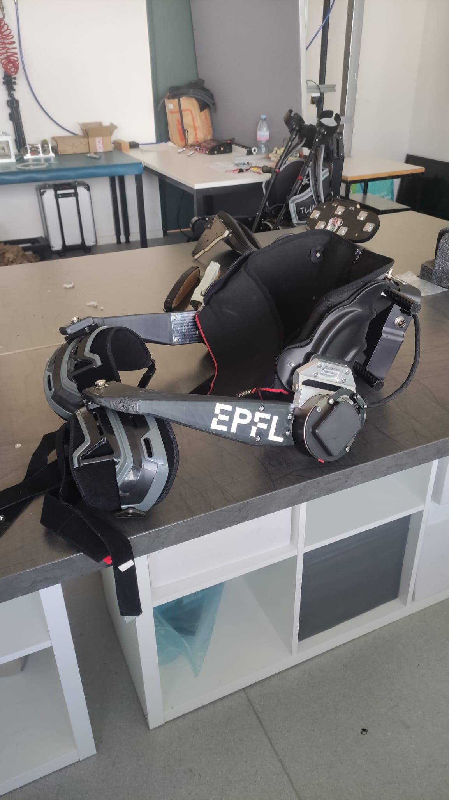
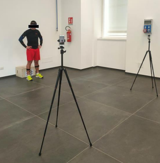
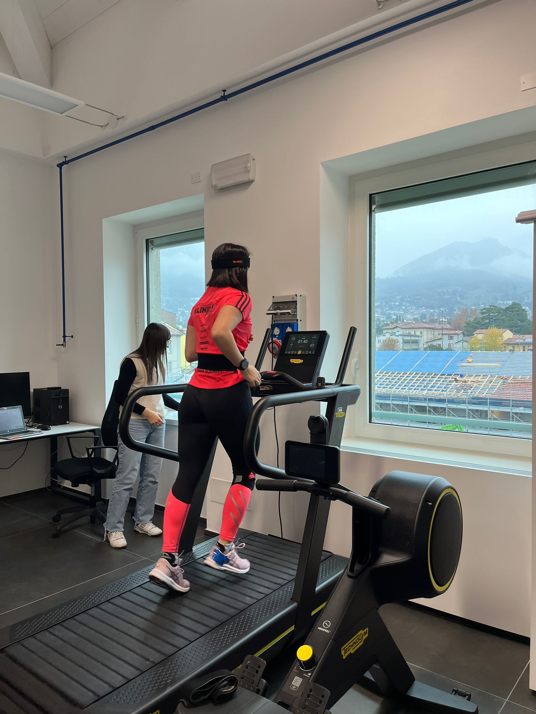

This thesis investigates rapid online learning of individual users’ preferred hip-exoskeleton assistance across multiple locomotion conditions.
Rather than focusing exclusively on objective performance metrics, this work embraces an explicitly user-centred perspective by integrating subjective feedback into the optimization process.

This report presents the concept and design of a smart garment integrating surface electromyography (EMG) and Functional Electrical Stimulation (FES), developed to enhance the autonomy of elderly users.

In this work, it is proposed a procedure for the implementation of the reference trajectories, based on the“Teach and Play” approach, in order to deal with trajectory realization in upper-limb rehabilitation exoskeleton. The already mentioned “Teach and Play” approach better meets therapists’ expectations butlack consistency and optimization.

Since the human motion analysis has become more and moreused in fields that are not directly related to the clinical one, it is necessary to find more intuitive and user-friendly acquisition systems as OpenCap. The main objective of this work was to validate the OpenCap motioncapture system comparing the acquisitions’ results with the Xsens’ ones, aleading provider of inertial sensors.

In this project the vibrations transmitted during running have been studied. Xsens IMUs have been utilised for this purposed. After a first calibration procedure to study the deviation of Xsens among the frequency field, the experimental campaign has been conducted. IMUs were used to see how the vibration where transmitted along human body.

L’argomento della presente relazione è la descrizione del processo di riprogettazionedell’albero centrale di un motoriduttore a tre stadi ed assi paralleli. Partendo da un modello diriferimento (Rossi MR 3I 80), a seguito di modifiche sui parametri di potenza e velocità inuscita richieste, si è resa necessaria una rimodulazione di tale albero.